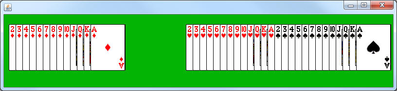
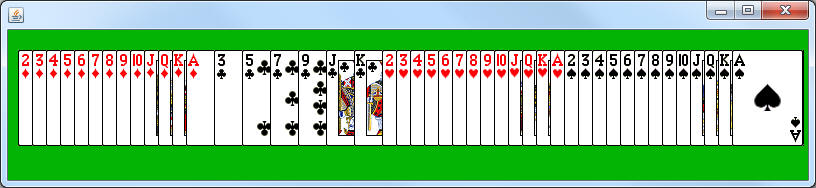

Create a class named SuitRemoverBoard, which extends CardBoard.
Add a method with the following header:
public void onKeyPress(int keyCode)
We haven't used this method for a while, but this is the method that will be called when a keyboard key is pressed down. The parameter is the key code that represents the key that has been pressed. For example: The spacebar is 32 and Enter is 10.
In the onKeyPress method, use if statements to determine if the key pressed was either a C, D, H, or S (keycodes 67,68,72, and 83). Once you know it was one of the four of those, loop through the ArrayList and remove any card with the matching suit.

public static void removerRunner()
{
SuitRemoverBoard sr = new SuitRemoverBoard();
sr.setTitle("Suit Remover");
sr.launch();
}
Common Error:
When you are both looping and removing elements from a list you have to be very careful. It is common to accidentally skip an element when you remove another one. This is because when you remove elements the other elements shift to fill the gap.
For example: If I was removing Clubs from the list below:
Two of Diamonds, Three of Clubs, Ace of Spades, Six of Diamonds
As my loop's i variable hit 1, I would remove the Three of Clubs and increment i to 2. The problem is that when the Three was removed, the Ace slid into index 1. The loop did not take this into consideration and incremented right past the Ace.
This can cause you to skip elements when removing:

How to fix this:
1) Add an i-- every time you remove something from the loop. This will counteract the automatic i++ and cause it to stay at this index until it finds an element it doesn't want to remove.
OR
2) Loop backwards. Since removing only affects the element after the removed index, looping backwards means that we've already checked the elements that are moving around.